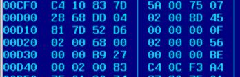

1. Co robi komputer?
Jak wiemy, typowy zestaw komputerowy sk³ada siê z procesora, pamiêci operacyjnej
(umieszczonych na p³ycie g³ównej) oraz urz±dzeñ zewnêtrznych, z których
niektóre s± lub mog± byæ zintegrowane z p³yt± (karta graficzne, sterowniki
dysków i dyski, karta d¼wiêkowa, karta sieciowa, modem, monitor itp.). O tych
elementach komputera mówimi jako o sprzêcie (hardware).
Odpowied¼ jest negatywna. Nie wystarczy (nawet najnowocze¶niejszy)
sprzêt. Program jest zakodowan± sekwencj± instrukcji,
które ma wykonaæ procesor (lub za jego po¶rednictwem inne elementy sprzêtowe).
Na przyk³ad pisanie i redagowanie tekstów mo¿e siê odbywaæ tylko dziêki temu, ¿e dzia³a odpowiedni program - edytor lub procesor tekstów. Programy takie s± skomplikowane, czêsto bardzo du¿e, ale w sumie sprowadzaj± siê do pewnych sekwencji prostych instrukcji zlecanych do wykonania sprzêtowi (przede wszystkim procesorowi). Mówi siê powszechnie, ¿e instrukcje wykonuje program. Np. "program wykona³ b³êdn± instrukcjê i nie mo¿e byæ kontynuowany". Takie sformu³owania s± wygodne i w pewnym sensie poprawne, pamiêtajmy jednak o tym, ¿e instrukcje s± przekazywane do wykonania procesorowi.
Kiedy zatem siedzimy przed "czyst± kartk±" jakiego¶ dokumentu i zastanawiamy siê jak zacz±æ pisanie, to jaka¶ czê¶æ dzia³aj±cego akurat programu-edytora ¶ledzi klawiaturê (czeka na wprowadzenie znaku z klawiatury), a kiedy wci¶niemy klawisz jakiego¶ znaku - wykonuje instrukcje skutkuj±ce w uwidocznieniu w okre¶lony sposób (rodzaj, wielko¶æ, kolor pisma) tego znaku na ekranie monitora. Zatem wykonanie programu polega na przekazywaniu instrukcji procesorowi. Ale przecie¿ nie zawsze program siê wykonuje. Co siê wtedy z nim dzieje? Co musi siê staæ, ¿eby zacz±³ dzia³anie? Programy (jako zapisane ci±gi instrukcji) rezyduj± na dysku twardym. Uruchomienie programu polega na za³adowaniu go do pamiêci operacyjnej i przekazaniu sterowania do pierwszej jego instrukcji. Tym zajmuje siê specjalne oprogramowanie systemowe i wspomagaj±ce. Bez niego komputer nie móg³by dzia³aæ, nie móg³by komunikowaæ siê z u¿ytkownikiem, nie móg³by wykonywaæ - na jego zlecenie - okre¶lonych programów. Mo¿emy zatem w tej chwili ju¿ z pewno¶ci± stwierdziæ, ¿e dzia³anie komputera polega po prostu na wykonywaniu programow - czy to systemowych, czy to u¿ytkowych. Wszystkie programy komunikuj± siê z procesorem w specjalnym jêzyku. "S³owa"
tego jêzyka to liczby. Niektóre z tych liczb maj± specjalne znaczenie -
w³a¶nie kodów instrukcji do wykonania (warto dodaæ, ¿e bardzo prostych
instrukcji; z³o¿one programy sk³adaj± siê z bardzo du¿ej liczby takich prostych
instrukcji). Inne liczby oznaczaj± dodatkow± informacjê, która jest potrzebna
przy wykonaniu instrukcji. Ta dodatkowa informacja stanowi zwykle dane nad
którymi przeprowadzane s± jakie¶ operacje (np. dodawanie liczb). Przyk³adowa sekwencja instrukcji maszynowych hipotetycznego komputera
mo¿e wygl±daæ tak:
10001010 10001000 00000001 11001010 ..... Có¿ to za dziwne liczby sk³adaj±ce siê z samych zer i jedynek? Z tego wynika, ¿e Wa¿n± rolê w informatyce odgrywa bajt. S³owo maszynowe - to najmniejsza, adresowalna komórka pamiêci
operacyjnej, jak równie¿ - odpowiadaj±cy tej wielko¶ci rozmiar rejestrów
procesora, czyli specjalnego wewnêtrznego uk³adu pamiêciowego, o bardzo
szybkim dostêpie, w którym procesor przechowuje chwilowo dane aktualnie
wykonywanych operacji
W szczególno¶ci dlatego, ¿e procesory operuj± na jednostkach, które nazywaj± siê s³owami maszynowymi, sk³adaj±cych siê z ca³kowitej liczby bajtów. Bajt jest najmniejszsz± czê¶ci± s³owa maszynowego, dostêpn± bezpo¶rednio dla procesora. Kody instrukcji procesorów by³y i s± jedno lub kilkubajtowe. Znaki (litery) by³y i s± kodowane jako liczby jedno (np. kody ASCII, EBCDIC) lub wielo - bajtowe (np. DCSB lub Unicode). A poniewa¿ pó³ bajta mo¿na przedstawiæ jako cyfrê szesnastkow±, to heksadecymalny system liczbowy jest wygodniejsz± (od binarnego, bo jest bardziej czytelny; ale i od dziesiêtnego, bo widzimy w nim wyra¼ny podzia³ na bajty) form± przedstawiania zapisu maszynowego kodu programu. Fragment kodu maszynowego przedstawia rysunek obok. Po lewej stronie widzimy kolumnê wzglêdnych adresów przestrzeni adresowej programu, po niej nastêpuj± ci±gi instrukcji (kodów i danych). Oczywi¶cie, mo¿na napisaæ program w jêzyku maszynowym. Ale domy¶lamy siê, ¿e jest to zadanie niezwykle pracochlonne, a pisanie w taki sposób programów - niezwykle niefektywne. A jednak - na samym pocz±tku epoki komputerów tak w³a¶nie pisano programy. Na pomoc biednym programistom pionierskiej epoki komputeryzacji przysz³o stworzenie asemblerów - jêzyków symbolicznego zapisu instrukcji maszynowych danego procesora. Od tego momentu, program, który wcze¶niej trzeba by³o zapisywaæ np. tak: 5830 D252 5A30 D256 5030 D260 mo¿na by³o zapisaæ du¿o pro¶ciej i bardziej zrozumiale, np:
Taki zapis - bardziej zrozumia³y dla nas - jest jednak niezrozumia³y
dla procesora. Programy zapisane w symbolicznym jêzyku assemblera, musz±
byæ przet³umaczone na jêzyk maszynowy (ci±g cyfr binarnych) i tym zajmuj±
siê translatory (czasem zwane potocznie równie¿ assemblerami).. Wszak¿e programowanie w jêzyku assemblera jest wci±¿ uci±¿liwe. Co gorsza obarcza ono programistê obowi±zkiem pamiêtania ró¿nych technicznych szczegó³ów (rejestry, ich numery, adresowanie pamiêci), wymaga od niego zapisywania bardzo elementarnych operacji i nie pozwala dostatecznie skupiæ siê na dziedzinie i logice rozwi±zywanego (przez program) problemu. W istocie w powy¿szym "programiku" chodzi o dodanie do siebie dwóch liczb
(oznaczonych X i Y) i zapisanie wyniku jako Z. Z = X + Y ? Dlatego pojawi³y siê jêzyki programowania (¶ci¶lej - i dla odró¿nienia
od jêzyków assemblera - jêzyki programowania wysokiego poziomu), które
w swoich instrukcjach, sk³adni, semantyce konsoliduj± wiele prostych instrukcji
assemblerowych, ukrywaj± ich techniczne szczegó³y, i - w porównaniu z
assemblerami - s± sk³adniowo niezale¿ne od procesora. W tych jêzykach
naprawdê mo¿emy napisaæ: Z = X + Y, nie martwi±c siê rejestrami, wzglêdnym
adresowaniem pamiêci i zestawem rozkazów konkretnego procesora.
|